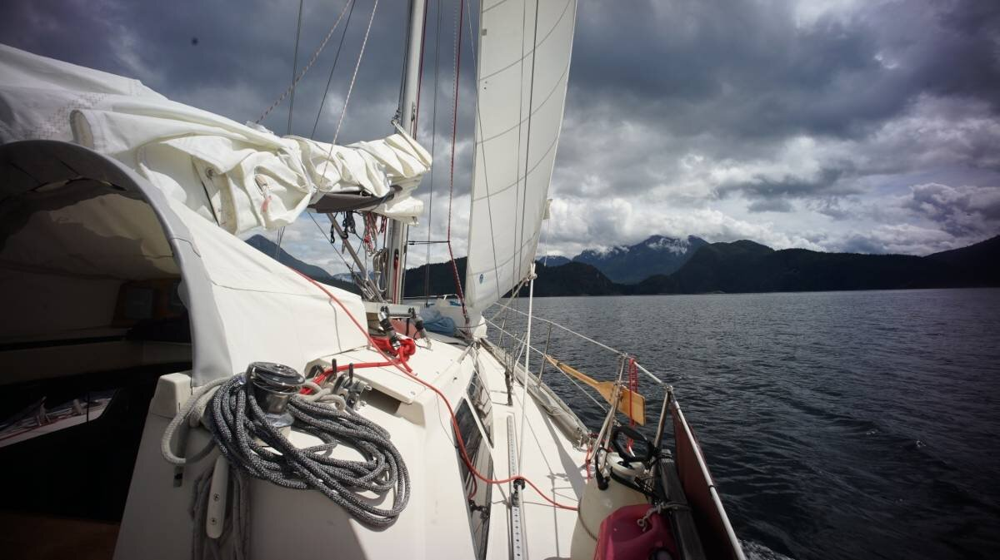

melanie cove

What we refer to on this page as Melanie Cove is on the traditional, stolen, unceded land of the Klahoose and Tla’amin First Nations people.
On June 10 2022, we left grace harbour on a day with 15-25 knots from the southeast in the forecast, only to find the wind on the nose instead of in the back. The mountains and various islands in the area cause the wind to funnel and curl around islands, making it difficult to plan a trip if you don't know the area. The wind was only blowing at 10 knots, but we were able to use it to get past Mink Island. Once past Otter Island, the land seemed to part, revealing tall, beautiful snow-covered mountains in the background.

We made our way into the entrance to Prideaux Haven. The entrance was tricky, with a rock on the starboard side, and a set of shoals just ahead, it is necessary to do a quick turn after the rock to avoid the shoals. Our boat is small, but we found the entrance tight. It is crazy to think that super yachts come and anchor in here in the summer, we had difficulty imagining a large 60-foot boat trying to turn around the rock and then to turn quickly again to miss the next obstacle... but they do it.
We moved past the main anchorage and dropped the hook in Melanie Cove. The bay is overrun by moon jellyfish. There are so many that it looks like it is raining, but it is their tops hitting the surface of the water that is creating ripples.

The state of the bay in early June is very different in late July. We stayed in this cove on 3 separate occasions. In Late July, the bay that was previously filled with jellyfish appeared devoid of any, that is, until you dove a few feet underwater. The moon jellyfish were there, but they stayed about 6 feet below, away from the warmer layer of water. They hover in the depths, waiting for the cold to return so they can bob back to the surface. Rek enjoyed diving near, to the edge of the jellyfish layer. The water is clear to about 10 feet ahead, and below. It is sometimes scary to swim in water where you can't see the bottom, but the thick floor of jellyfish provided some comfort, as odd as it sounds.
A reef lies near shore, and with an ebbing tide the reef enlargens and seems to draw a path towards our stern, a sort of land-bridge to Pino... revealing more of itself as the water recedes. With big tides, the reef, or Kehaar Island (as we've named it), becomes more than a reef, it takes on the look of a tiny island. There is always a gull of two at its peak, that is unless the tide rises high enough to swallow it all up. The tides here are large, we've seen it rise and fall 18 feet, enough to allow a small island to grow massive, and to disappear entirely in the same day.
There were 4 other boats already in the bay, and we had plenty of room to free-swing.
We had some sun that day, and rowed over to Dakota's boat to soak up some sun on their deck. Their bow is large enough to accommodate 4 chairs. They left for Refuge Cove the next day to try and pick up some fresh produce. They told us that the store there received new shipments on Saturdays, but on their visit there wasn't a crazy variety, it is still too early in the season and they will likely offer more come July. Still, they picked up a small green cabbage and a half red cabbage for us, to add to our dwindling supplies.

Melanie Cove is where Mike Shutter's cabin used to be, the guy that Wylie Blanchett talks about in the book The Curve of Time. It's funny, our good friend Chris gave us this book as a leaving present when we left to circle the Pacific in 2016, we read it while underway but because it is about boating in Desolation and the Broughtons, and that we had not yet been, it was difficult to picture it all. Now, we are re-reading it and the places that she describes are coming to life, like a ghost suddenly gaining flesh. The cabin is no longer there, but it is nice to think about Mike living here, alone, logging entire trees on his own. I also enjoy the idea of Caprice anchored here, with few boats around to bother them.
Because it is early in the season, there aren't too many boats here now, and we are glad of it.
There are a lot of trails around the anchorage, linking neighboring bays together. It's possible to walk to Tenedos Bay, and Laura Cove, although Laura is much closer and the walk to Tenedos is a much longer hike. To reach our favorite trail, we tied the dinghy to a fallen tree near some rocks, near the end of the bluff between Melanie Cove and Prideaux Haven.
We went bushwacking near Laura Cove and our friend showed us a handmade shelter, off path, built by someone some years ago out of thick branches. There were still some old pots there, a kettle, a sleeping bag and a variety of other things. When they found the shelter, they assumed that someone had built it and that something had happened to them, they reported the shelter to the RCMP, but then heard no more of it. Whoever lived here had knowledge on how to live outdoors, they had built a old-style fish trap, and the shelter was sturdy, with a raised bed built inside from wood to keep off the cold and damp ground. The person had likely left in a hurry, or something bad had happened, they would have not have left their possessions. We did not touch anything in the shelter, it belongs to the ghost of Laura Cove.
The trails we found were full of moss, and in areas where there is less shade, the ground became soft still, but crunchy. What an odd feeling to walk on crunchy, but still, soft ground.
The bay is occupied by a seal mum and pup, we see them swimming around the bay often. As we rowed teapot, we often saw her shiny head poking out of the water, to look at us. We also saw a lot of mergansers. We would spot some often in Victoria, but they never came out of the water. They're diver birds, always halfway underwater, like a cormorant. Here, they lay on fallen tree trunks on shore, and we get to see them fully.
This is one of our favorite anchorage so far in Desolation Sound, it is well protected, not too deep, and big boats don't come in here because they all prefer the view in Prideaux. We ended up staying 15 days here.
After a short stop in Refuge Cove, we sailed on to hathayim marine park on Cortes Island.